Desde nuestra fundación en 2009, SIRT ha crecido hasta convertirse en uno de los referentes de infraestructura tecnológica en Santa Cruz de la Sierra, Bolivia. Nuestra misión es simplificar la vida de las empresas a través de soluciones de conectividad robustas y confiables.
Estos son los principios que guían cada proyecto y cada decisión que tomamos como empresa.
Buscamos la máxima calidad en cada instalación, configuración y soporte que brindamos a nuestros clientes.
Construimos relaciones duraderas basadas en la transparencia, la honestidad y el cumplimiento de cada compromiso.
Nos mantenemos actualizados con las últimas tecnologías para ofrecer siempre las soluciones más modernas del mercado.
Cada proyecto es tratado con la misma dedicación, ya sea una pequeña oficina o una gran infraestructura corporativa.
Profesionales certificados y apasionados por la tecnología, comprometidos con el éxito de cada cliente.
Ingeniero en telecomunicaciones con más de 10 años de experiencia liderando proyectos de infraestructura tecnológica en Bolivia.
Especialista en diseño e implementación de redes LAN/WAN, certificada en MikroTik y Ubiquiti con amplia experiencia en proyectos corporativos.
Nos enfocamos en comprender las necesidades de cada cliente para ofrecer soluciones tecnológicas confiables, innovadoras y adaptadas a sus objetivos.
Técnico especializado en soporte de primer y segundo nivel, gestión de tickets y mantenimiento preventivo de infraestructura IT.
Contáctanos hoy y recibe una consultoría gratuita. Nuestros ingenieros evaluarán tus necesidades y diseñarán la mejor solución.